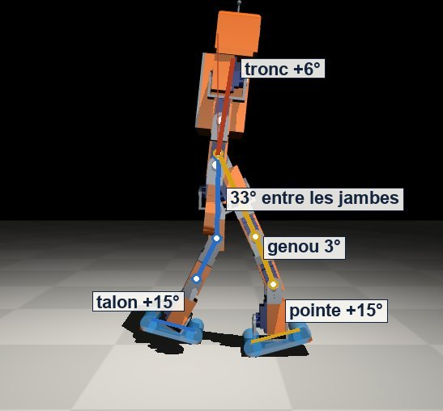

Navitek Robolabs · une thèse ouverte · version du 18 novembre 2026
Apprendre à marcher à un humanoïde imprimé
N0.1, 37 cm, dix-sept servos SG90 et une seule carte graphique : la recherche, ses données, ses films et ses erreurs, publiés au fur et à mesure.
Yoan Maisonneuve et Claude · Navitek Robolabs, YM IA Conseil, Grand Montréal · travail en cours, en simulation

RésuméRésumé
Peut-on apprendre à un humanoïde de 37 cm, imprimé en plastique et mû par dix-sept servomoteurs de modélisme de 9 g (des SG90, 0,18 N·m chacun), à marcher comme un humain : de grands pas, la jambe tendue quand le talon touche, le corps qui bascule par-dessus le pied ? Nous l'apprenons en simulation (MuJoCo), sur une seule carte graphique de bureau, par apprentissage par renforcement (PPO), en imitant une marche de référence tirée d'une photo d'un pas humain.
La méthode est celle d'un cahier de laboratoire tenu en public : chaque essai écrit sa prédiction avant de tourner et son verdict après (844 prédictions dans 161 cahiers : 288 confirmées, 73 en partie, 386 réfutées) ; toute mesure nouvelle passe d'abord sur un cas dont on connaît la réponse ; aucun résultat n'est annoncé avant d'avoir été vu en film. Un score de la marche, de 0 à 1, pèse quatre niveaux débloqués dans l'ordre : les grands pas, la vitesse, la fluidité, la sûreté.
Résultats, à ce jour et en simulation : une marche droite qui obéit à 2, 5 et 10 cm/s, un saut amorti depuis 6 cm, un escalier de cinq marches de 1 cm, et une marche à 31,5° entre les jambes, le genou à 11° quand le talon touche (score 0,80). Nous montrons aussi pourquoi notre première référence ne posait pas le talon jambe tendue (la cheville de N0.1 est près de l'avant de son pied), comment la corriger, et que les SG90 plafonnent alors autour de 29 cm/s. Rien n'est encore imprimé : c'est la suite.
Mots-clés : humanoïde imprimé, marche bipède, apprentissage par renforcement, imitation, MuJoCo, servomoteurs SG90, science ouverte.
Chapitre 1Introduction
La question. Un humanoïde qu'on imprime chez soi, avec les servos les moins chers du commerce, peut-il apprendre une vraie marche, et pas seulement un pas traîné ? Les grands humanoïdes apprennent à marcher avec des moteurs puissants et des capteurs coûteux ; nous partons de l'autre bout : le robot le plus simple qu'on puisse imprimer, et toute la difficulté reportée dans l'apprentissage.
Pourquoi ouvert. Tout est publié au moment où c'est fait : les fichiers à imprimer, le code, les cahiers, les films, les erreurs. Un robot que tout le monde peut imprimer, refaire et vérifier ne reste dans l'ombre de personne.
Ce que cette thèse apporte.
- Un humanoïde de 37 cm dessiné par code (chaque pièce générée, vérifiée, tranchée), et son jumeau simulé aux masses et aux couples réels de ses servos.
- Une méthode pour apprendre la marche sur une seule carte graphique : l'imitation légère d'une référence tirée d'une photo, des récompenses données au moment précis du pas, un départ déjà lancé.
- Un protocole de chercheur tenu en public : la prédiction avant, le verdict après, le cas connu, le film avant l'annonce, et un score unique de la marche.
- Des résultats négatifs autant que positifs, et un registre des erreurs : ce qui ne marche pas est une donnée.
Statut : tout ce qui suit est simulé. Le premier gabarit imprimé et le premier vrai servo sont la prochaine étape.
Chapitre 2Ce qui existe
Les humanoïdes ouverts. Une part de la robotique humanoïde se publie ouverte : les bibliothèques d'apprentissage d'Unitree, MuJoCo Playground de Google DeepMind (sur MuJoCo Warp, comme notre tour), Open Duck Mini (un robot de 40 cm à servos du commerce, qui apprend à marcher en imitant une marche de référence), ToddlerBot (Stanford). Les plus avancés (Tesla, Boston Dynamics, Figure) restent fermés. Notre revue : R-179.
Apprendre un geste en l'imitant. DeepMimic a montré qu'un personnage simulé apprend un geste en suivant une référence, et qu'il apprend plus vite s'il commence au milieu du geste plutôt qu'au début (l'initialisation dans l'état de la référence). Nous reprenons les deux idées, et nous les poussons : un départ lancé, déjà à la vitesse de la marche (R-201).
La marche humaine. Les planches de Muybridge (1887) découpent un pas en images ; la mécanique de la marche le décrit comme un pendule inversé, où le corps bascule par-dessus la jambe d'appui, et le nombre de Froude dit quand deux marches de tailles différentes se ressemblent. À 5 cm/s, N0.1 marche environ 150 fois plus lentement qu'un humain au même nombre de Froude : un ralenti, où rien ne porte le corps sauf ses servos (R-194).
Chapitre 3Le robot

De N0 à N0.1. N0.1, décidé le 15 novembre, croise ses hanches et ses épaules en deux servos, pose ses pieds sur une semelle arrondie à 15° et ne porte que des SG90 : dix-sept servos de 9 g, 0,18 N·m chacun. Son jumeau simulé pèse chaque pièce, semelle comprise ; un résultat sur un robot qui n'est pas celui qu'on imprime ne compte pas.
Ce que la géométrie impose. La cheville de N0.1 est à 11 mm devant le centre de son pied. Posé sur le talon la pointe relevée, le pied de devant soulève sa cheville de 10 mm ; roulé sur sa pointe, le pied arrière ne soulève presque pas la sienne. C'est ce qui faisait plier le genou à la pose du talon, et c'est par le placement du pied qu'on l'a corrigé (chapitre 5).
Chapitre 4La méthode
4.1 La simulation
MuJoCo Warp sur une carte RTX 3060 Ti : 4 096 robots simulés en même temps, de 85 à 90 millions de pas par heure. Les servos y ont leur couple réel (0,1766 N·m), un retard de commande tiré au hasard et un filtre de 80 ms ; le sol, son adhérence. La file de la tour tourne jour et nuit, surveillée toutes les cinq minutes, toujours remplie pour plusieurs jours.
4.2 L'apprentissage
Un réseau de neurones de deux couches de 256 reçoit l'état du robot (ses angles, ses vitesses, la commande) et rend la consigne de ses servos, cinquante fois par seconde ; il apprend par PPO. Il imite une marche de référence tirée d'une photo d'un pas humain (R-190), refaite pour que N0.1 pose le talon jambe tendue (R-198), et il est payé au moment précis du pas : la pose de la photo à chaque pose du talon, la bascule par-dessus le pied (le pivot, R-197), la douceur des commandes, le tronc droit, la vitesse demandée.
4.3 Le protocole du chercheur
- La question et la prédiction écrites avant, dans un cahier numéroté (le numéro réservé par un script).
- Le cas connu : toute mesure ou récompense nouvelle passe d'abord sur un cas dont on connaît la réponse.
- L'essai court sur la tour : rien ne plante, et le monde simulé est bien celui qu'on croit.
- Le banc final : 30 départs à 2, 5 et 10 cm/s, le même juge pour tous, le verdict contre la prédiction.
- Le film regardé avant toute annonce.
- Tout publié : le cahier, le film, la recette de la marche mise à jour.
4.4 Le score de la marche
Un seul nombre de 0 à 1 par marche apprise, la somme de quatre niveaux pondérés, débloqués dans l'ordre : les grands pas (λ 0,40 : 33° entre les jambes et le genou sous 10° quand le talon touche), la vitesse (0,25 : de 0,9 à 1,1 fois la vitesse demandée), la fluidité (0,20 : les à-coups des articulations et la régularité du bassin, mesurée par le SPARC), la sûreté (0,15 : 28 départs sur 30 debout). À côté du score, son coût : les millions de pas de simulation qu'il a fallu depuis zéro.
Chapitre 5Les résultats
5.1 Le score de chaque marche
| La marche | N1 grands pas | N2 vitesse | N3 fluidité | N4 sûreté | Score | Millions de pas |
|---|---|---|---|---|---|---|
| L18-suite-400 | 0,87 | 0,74 | 0,70 | 0,86 | 0,80 | 540 |
| PZ-zero-400 | 0,44 | 0,98 | 0,58 | 1,00 | 0,69 | 400 |
| PZ-tendu | 0,44 | 0,78 | 0,70 | 1,00 | 0,66 | 100 |
| tendu-zero-400 | 0,41 | 1,00 | 0,46 | 1,00 | 0,66 | 400 |
| L19-pivot | 0,75 | 0,41 | 0,46 | 1,00 | 0,65 | 220 |
| pivot-zero | 0,38 | 0,96 | 0,34 | 1,00 | 0,61 | 120 |
| L18b-tendue6 | 0,58 | 0,33 | 0,71 | 1,00 | 0,61 | 140 |
| tendue-zero | 0,28 | 0,88 | 0,31 | 1,00 | 0,54 | 120 |
Aucune marche n'a encore franchi le premier niveau (un niveau est franchi quand il vaut 1). Les millions de pas comptent toute la lignée d'apprentissages.
5.2 La marche droite, apprise de zéro
5.3 Encaisser une chute, monter un escalier

5.4 Du glisseur au marcheur : le pivot
5.5 La référence refaite : la jambe tendue à la pose

5.6 La plus proche de la cible
Chapitre 6Discussion
6.1 Ce que nous avons appris
- Une mesure se prend au moment que la question nomme. Notre « genou tendu à 3° » était la médiane sur tout l'appui ; à l'instant où le talon touche, il était plié à 17°.
- La référence doit être juste avant d'entraîner. Un départ de zéro garde la forme de sa référence, défauts compris.
- Calculer avant de chercher au hasard. La hauteur de chaque jambe, calculée, a trouvé en une minute pourquoi le genou pliait ; trente-deux variantes à l'aveugle ne l'avaient pas trouvé.
- Une récompense par pied s'additionne sur deux pieds et paie le piétinement : une récompense de marche se donne en appui simple, et se vérifie sur un cas connu avant de partir.
- Le temps d'apprentissage compte. La même lignée passe de 21° à 31,5° entre les jambes entre 140 et 540 millions de pas.
- Une règle écrite en phrases ne protège pas ; un contrôle en code, oui. Notre propre méditation de nuit l'a montré sur nos erreurs de numérotation.
6.2 Les limites
Tout est simulé : le passage au vrai robot reste à faire, et le vrai SG90 a du jeu, des à-coups et une vitesse sous charge que la simulation ne connaît qu'à moitié. La marche visée demande à la cheville jusqu'à 133 % du couple d'un SG90 un dixième du cycle ; l'inertie de ses rotors n'est pas mesurée. Et à 5 cm/s, la marche n'est pas encore dynamique : l'élan seul ne porterait le corps par-dessus le pied qu'à 39 cm/s.
6.3 Les erreurs, comme des données
Nous en avons noté 102, chacune avec la règle qu'elle a laissée. Quelques-unes : un saut de 25 cm qui était un robot tombant à travers le sol (E85) ; un escalier annoncé sans escalier dans la physique (E101) ; un genou « tendu » mesuré au mauvais instant (E102) ; des numéros de cahier pris deux fois (E103). Une erreur publiée coûte moins qu'une erreur cachée.
Chapitre 7Conclusion et suite
Un humanoïde de 37 cm aux servos de 9 g apprend, en simulation, une marche droite, encaisse une chute, monte de petites marches et approche la pose d'un vrai pas humain : 31,5° entre les jambes, le genou à 11° quand le talon touche. La cible (33° et le genou sous 10°, ensemble) n'est pas encore atteinte.
En cours sur la tour : cinq références de formes différentes apprises de la même façon, pour voir ce que la référence apprend au robot (R-200) ; et le départ déjà lancé dans le grand pas (R-201). Ensuite : imprimer le premier gabarit, mesurer un vrai SG90, et passer du jumeau simulé au robot sur la table.
AnnexesAnnexes
A. Le cahier de recherche
161 cahiers et 844 prédictions : 288 confirmées, 73 en partie, 386 réfutées, 48 à revoir, 49 en attente. Chacun : la question, la prédiction avec sa crédence, le dispositif, le verdict, les films. Le cahier de recherche.
B. Les films
Les meilleurs, le bêtisier et une journée en 45 secondes : les films de Navitek.
C. Les fichiers et le code
Les pièces à imprimer (STL, plateaux 3MF), le schéma électrique, le programme du robot et celui du banc : sur la page du robot. Le code de la simulation et de l'apprentissage est publié avec les cahiers.
D. Les autres robots
N1 (62 cm), N2 (un mètre, des actionneurs imprimés) et N3 (1,5 m) : les suites dessinées.
E. Comment citer ce travail
Maisonneuve, Y. et Claude (2026). Apprendre à marcher à un humanoïde imprimé : N0.1, 37 cm, dix-sept servos SG90. Navitek Robolabs, thèse ouverte, version du 2026-11-18. https://ymiaconseil.com/navitek/these/
RéférencesRéférences
- Alexander, R. McN. (1984). The gaits of bipedal and quadrupedal animals. The International Journal of Robotics Research, 3(2).
- Balasubramanian, S., Melendez-Calderon, A., Roby-Brami, A. et Burdet, E. (2015). On the analysis of movement smoothness. Journal of NeuroEngineering and Rehabilitation, 12.
- Kuo, A. D., Donelan, J. M. et Ruina, A. (2005). Energetic consequences of walking like an inverted pendulum: step-to-step transitions. Exercise and Sport Sciences Reviews, 33(2).
- Muybridge, E. (1887). Animal Locomotion. Philadelphie : University of Pennsylvania.
- Peng, X. B., Abbeel, P., Levine, S. et van de Panne, M. (2018). DeepMimic: Example-guided deep reinforcement learning of physics-based character skills. ACM Transactions on Graphics, 37(4).
- Schulman, J., Wolski, F., Dhariwal, P., Radford, A. et Klimov, O. (2017). Proximal Policy Optimization Algorithms. arXiv:1707.06347.
- Todorov, E., Erez, T. et Tassa, Y. (2012). MuJoCo: A physics engine for model-based control. IEEE/RSJ IROS.
- Zakka, K. et al. (2025). MuJoCo Playground. arXiv:2502.08844.
- Open Duck Mini, un petit robot bipède ouvert à servos du commerce : github.com/apirrone/Open_Duck_Mini.